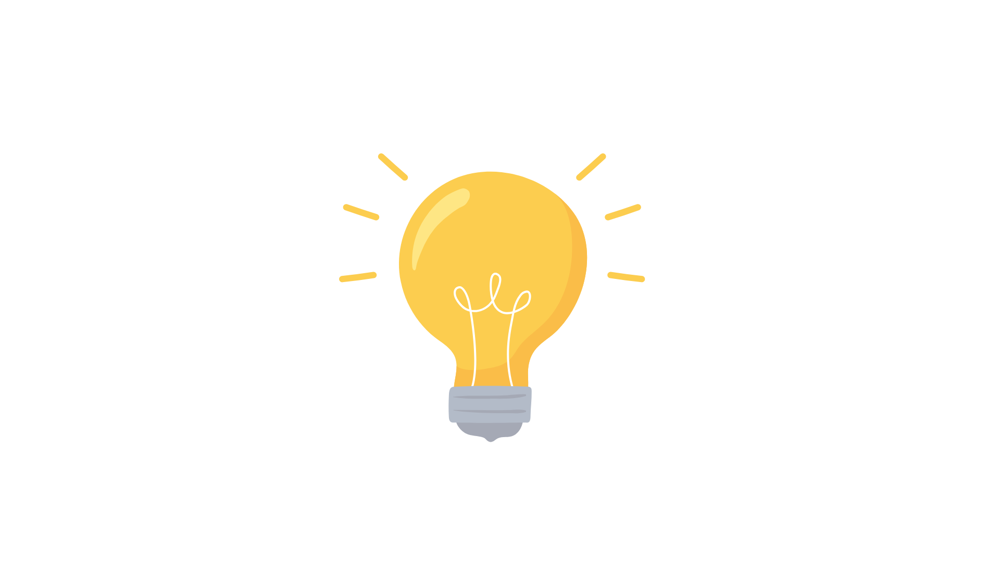

Beginning your gardening journey doesn't require a massive garden. In fact, starting small can help you learn the ropes without feeling overwhelmed.
Healthy soil is the foundation of any successful garden. Investing in good-quality soil will ensure your vegetables thrive.

Watering your plants is crucial, but overwatering can be just as harmful as underwatering. Learn how to water effectively to keep your plants happy.